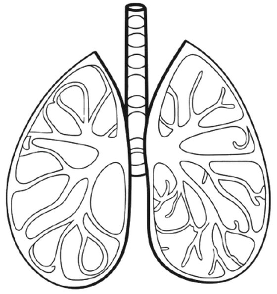
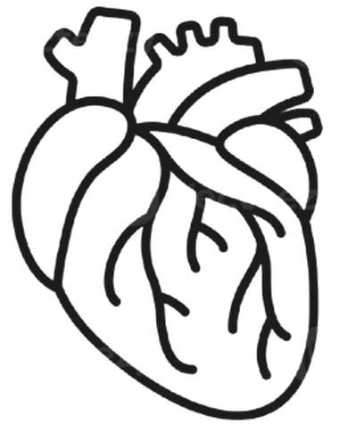

Démo de l'interface ChirBaby
Version web de l'interface Python (Tkinter et Matplotlib) développée pour le simulateur de nouveau-né ChirBaby 2.0, avec les Hospices Civils de Lyon. Elle reprend les mêmes modèles de ventilation et les mêmes enregistrements d'auscultation. Choisissez un module ci-dessous.
Simulateur respiratoire
Auscultation
Poumon

Cœur

Cliquez sur une zone pour écouter le son correspondant ; un second clic l'arrête. Sur le mannequin, ce sont des capteurs de force (FSR) reliés à une Arduino Nano ESP32 qui déclenchent ces sons en Wi-Fi quand l'anesthésiste pose le stéthoscope. Enregistrements : Torabi, Shirani et Reilly (2024), Manikin-Recorded Cardiopulmonary Sounds Dataset.
Information
Cette interface commande le ChirBaby, un mannequin de nouveau-né sur lequel les chirurgiens s'entraînent à l'opération de l'atrésie de l'œsophage.
- Le simulateur respiratoire affiche la pression, le volume et le CO2 expiré (ou le débit en pression contrôlée), avec trois scénarios : volume normal, pneumothorax et réglages manuels.
- Sur le vrai mannequin, le scénario choisi, la curarisation et la fréquence respiratoire sont envoyés en Wi-Fi à la carte ESP32 qui anime les organes.
- Dans cette démo web, la liaison avec la carte est désactivée : tout le reste fonctionne comme dans l'application.
Interface réalisée par des élèves ingénieurs de l'INSA Lyon en collaboration avec le Dr Frédérick Hameury (Hospices Civils de Lyon).
Ce que montre la démo
Les courbes sont calculées avec un modèle résistance-compliance du poumon : montée linéaire en volume contrôlé ou exponentielle en pression contrôlée pendant l'inspiration, puis décroissance exponentielle de constante de temps R·C à l'expiration, au-dessus de la PEEP. Le rapport I:E et la fréquence se mettent à jour en direct.
Portage web de l'application Python d'origine, réalisé pour ce portfolio.